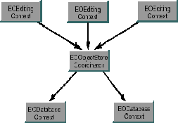

Inherits From:
EOObjectStore : NSObject
Conforms To: NSObject (NSObject)
Declared in: EOControl/EOObjectStoreCoordinator.h
For relational databases, Enterprise Objects Framework provides a concrete subclass of EOCooperatingObjectStore, EODatabaseContext. The EODatabaseContext class represents a single connection to a database server. EODatabaseContext fetches and saves objects on behalf of one or more EOEditingContexts. However, EODatabaseContext and EOEditingContext don't interact with each other directly-an EOObjectStoreCoordinator acts as a mediator between them.

Overridden by subclasses to commit the transaction. Raises an exception if an error occurs; the error message indicates the nature of the problem.
See also:
- performChanges , - commitChanges ,
- saveChangesInEditingContext: (EOObjectStoreCoordinator)
handlesFetchSpecification:
- (BOOL)handlesFetchSpecification:(EOFetchSpecification *)fetchSpecification
Overridden by subclasses to return YES if the receiver is responsible for fetching the objects described by fetchSpecification. For example, EODatabaseContext determines whether it's responsible based on fetchSpecification's entity name.
See also: - ownsGlobalID: , - ownsObject:
ownsGlobalID:
- (BOOL)ownsGlobalID:(EOGlobalID *)globalID
Overridden by subclasses to return YES if the receiver is responsible for fetching and saving the object identified by globalID. For example, EODatabaseContext determines whether it's responsible based on the entity associated with globalID.
See also: - handlesFetchSpecification: , - ownsObject:
ownsObject:
- (BOOL)ownsObject:(id)object
Overridden by subclasses to return YES if the receiver is responsible for fetching and saving object. For example, EODatabaseContext determines whether it's responsible based on the entity associated with object.
See also: - ownsGlobalID: , - handlesFetchSpecification:
performChanges
- (void)performChanges
Overridden by subclasses to transmit changes to the receiver's underlying database. Raises an exception if an error occurs; the error message indicates the nature of the problem.
See also:
- commitChanges , - rollbackChanges ,
- saveChangesInEditingContext: (EOObjectStoreCoordinator)
prepareForSaveWithCoordinator:editingContext:
- (void)prepareForSaveWithCoordinator:(EOObjectStoreCoordinator *)coordinator editingContext:(EOEditingContext *)anEditingContext
Overridden by subclasses to notify the receiver that a multi-store save operation overseen by coordinator is beginning for anEditingContext. For example, the receiver might prepare primary keys for newly inserted objects so that they can be handed out to other EOCooperatingObjectStores upon request. The receiver should be prepared to receive the messages recordChangesInEditingContext: and recordUpdateForObject:changes:.
After performing these methods, the receiver should be prepared to receive the possible messages performChanges and then commitChanges or rollbackChanges.
recordChangesInEditingContext
- (void)recordChangesInEditingContext
Overridden by subclasses to instruct the receiver to examine the changed objects in the receiver's EOEditingContext, record any operations that need to be performed, and notify the receiver's EOObjectStoreCoordinator of any changes that need to be forwarded to other EOCooperatingObjectStores.
See also: - prepareForSaveWithCoordinator:editingContext: , - recordUpdateForObject:changes:
recordUpdateForObject:changes:
- (void)recordUpdateForObject:(id)object changes:(NSDictionary *)changes
Overridden by subclasses to communicate from one EOCooperatingObjectStore to another (through the EOObjectStoreCoordinator) that changes need to be made to an object. For example, an insert of an object in a relationship property might require changing a foreign key property in an object owned by another EOCooperatingObjectStore. This method is primarily used to manipulate relationships.
See also: - prepareForSaveWithCoordinator:editingContext: , - recordChangesInEditingContext
rollbackChanges
- (void)rollbackChanges
Overridden by subclasses to roll back changes to the underlying database. Raises one of several possible exceptions if an error occurs; the error message should indicate the nature of the problem.
See also:
- commitChanges , - performChanges ,
- saveChangesInEditingContext: (EOObjectStoreCoordinator)
valuesForKeys:object:
- (NSDictionary *)valuesForKeys:(NSArray *)keys object:(id)object
Overridden by subclasses to return values (as identified by keys) held by the receiver that augment properties in object. For instance, an EODatabaseContext stores foreign keys for the objects it owns (and primary keys for new objects). These foreign and primary keys may well not be defined as properties of the object. Other EODatabaseContexts can find out these keys by sending the EODatabaseContext that owns the object a valuesForKeys:object: message. Note that you use this for properties that are not stored in the object, so using key-value coding directly on the object won't always work.
Copyright © 1997, Apple Computer, Inc. All rights reserved.